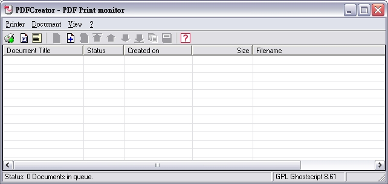

也紀念我們永遠的朋友 李士傑先生（Shih-Chieh Ilya Li）。
將文件轉成PDF的好幫手－PDFCreator
在 Windows 底下想把編輯好的檔案轉換 PDF 檔，其實是一件令人很頭痛的事情（不只是 Microsoft Office，包括其他有的沒有的應用軟體編輯出來的東西，當然，OpenOffice.org和 Adobe 系列的產品不算）。若使用 Adobe 原廠的工具，那價格可不是人人負擔得起，可是總有非把文件轉換成 PDF 不可的時候，此時此刻，最好的方法就是找找免費或自由軟體囉！
轉 PDF 的免費軟體其實不少，不過這一類的免費軟體通常有個特色，不是內含廣告就是功能有所不足。廣告是只要每次轉檔就會出來和你打招呼，功能不足的部份最常見的就是不能使用安全性設定。在我使用過的這一類軟體中，只有 PDFCreater 這個自由軟體沒有這些問題啦！唯一美中不足的是，文件內若有超連結，轉換之後將會失效，必須另外安裝其他相關的程式。（只是作者說安裝後可能會產生不可預知的問題…暫時還是不要用吧！畢竟多數時候要檢視的只是內容，不見得需要超連結）
此外，這個軟體輕薄短小，不像 Adobe 的工具那麼消耗系統資源，開啟程式和轉換檔案的速度都很快，是需要轉換PDF檔案者所不可不備的好東西！
只有這樣而已嗎？那就太小看這個自由軟體啦！它還可以把文件轉換成各種圖檔格式喔！包括常見的 PNG、JPEG、BMP、PCX、TIFF、PostScript 和 EPS。也就是說對方不能看 PDF 檔，那轉成圖片檔給他總可以吧？
這樣的一個好東西，咱們就一起來看看怎麼用吧！
◎ 下載與安裝
步驟一
在 SOURCEFORGE.NET 網站的搜尋欄位中，輸入 PDFCreator，很容易就可以找到下載的頁面。下載的內容有 2，一個是多國語言相關檔案，一個是程式本身。由於預設的語系只有英文，若希望使用繁體中文，那麼多國語言相關檔案就一併下載回來吧！
步驟二
下載多國語言檔案時，會發現有一個是 txt 的文字檔，一個是壓縮的 zip 檔。文字檔是說明多國語言檔內有哪些語言可用，zip 檔內就是包含可用的多國語言相關檔案。
安裝後的樣子
樣子一
主程式的安裝很容易，完成之後可在「Windows 的所有程式」內找到 PDFCreator 的資料夾，按一下其中的 PDFCreator，就可開啟，外觀就是這樣。看起來不知道怎麼用？別急，下面會介紹的。
樣子二

安裝完之後，在印表機與傳真的視窗內可以看到一台 PDFCreator 的印表機，請注意，這不是實體的印表機而是虛擬的。這樣子有什麼好處呢？其意思就是任何編輯軟體只要有列印功能，都可以利用 PDFCreator 來轉換檔案。
◎ 更換介面的語言
雖然下載時會發現主程式的版本和語言檔不同，不過安裝後一樣可以使用，沒有什麼問題。其實我個人比較喜歡英文介面（單字不懂就查嘛！反正看久了就習慣了），因為有些東西的翻譯，感覺有點怪。
步驟一
把下載回來的 zip 檔解壓縮之後，找到繁體中文的檔案 chinese_trational.ini，將它複製起來。
步驟二
按照 C:\Program Files\PDFCreator\languages 的路徑，開啟 languages 的資料夾，把檔案 chinese_trational.ini 貼進來。
步驟三
按一下 PDFCreator 功能表的「Printer＼Options」
步驟四
此時會開啟 Options（選項）視窗，在左邊欄位的上半部找到 Languages，在上面按一下，右邊的欄位就會切換到與其相關的項目，在 Current language（目前的語言）內可以選擇中文（繁體）。選了之後，介面的語言就會變成中文繁體了，最後也別忘了按一下儲存，否則更改是不會生效的喔！
◎ 基本的用法
PDFCreator 最基本的用法就是透過列印功能，除了任何有列印功能的編輯軟體都能用之外，就是不開啟 PDFCreator 也能使用。以下先來看看這個方式的基本用法。
步驟一
開啟任何 Word 編輯的檔案，按功能表的「檔案＼列印」，在印表機的選項內，選擇 PDFCreator 之後，按一下「確定」。
步驟二
此時會出現一個可輸入文件基本資料的視窗，目的是方便搜尋工具找到檔案。只是文件標題的部份並不支援中文，只能使用英文。要注意的是，最底下有個「儲存後以預設程式開啟文件」，預設是被勾選的，意思是若轉換為 PDF 檔案，那麼轉換完成後，將馬上以電腦內預設檢視PDF檔案的程式來開啟。建議這個選項不要取消，因為這樣可以立刻檢查轉換的結果是否成功。
相關內容輸入完畢後，按一下「儲存」。
補充說明：
若不想轉換，可按「取消」鈕；「等待[W]蒐集」鈕，則是目前不要轉換，暫列入等待轉換的清單中；「選項」則是開啟選項視窗，進行相關設定後再進行檔案的轉換。
步驟三
接著出現另存檔案的視窗，檔名會以剛剛所輸入的文件標題自動建立，當然我們也可以跟自己的需要來輸入中文檔名。
按一下儲存，就會開始轉換檔案了。
步驟五
轉換後，自動以預設的 Adobe Reader 開啟該 PDF 檔。（如使用其他的閱讀器，就會以該閱讀器開啟）
◎ 大量轉換
如果有多個文件要轉換為 PDF，用上面的方法就顯得有點慢了，這時可以利用拖曳法來解決。
步驟一
開啟檔案總管，切換到存放待轉換檔案的資料夾內。接著開啟 PDFCreator，用滑鼠將想轉換的檔案都選取來，直接拖曳到 PDFCreator 的視窗內，此時就會依序一個一個轉換檔案。當然，轉換過程中還是需要手動輸入檔名的。
如果不想馬上轉檔，可以在前述輸入檔案基本資料的視窗內，按一下「等待[W]蒐集」的按鈕。
萬一拉錯檔案想要刪除呢？很簡單，在 PDFCreator 下方的清單中，點選不要的檔案，按一下工具列上的 Delete 鈕就可以了。
補充說明：
在 PDFCreator 的工具列上有個加入的按鈕，這是以直接選取檔案的方式來轉檔，不過我個人認為這和直接拖曳的方式沒有太大的差別，有興趣的人不妨自行試試看。
◎ 從快顯功能表上轉換
另一個快速轉檔的方式，就是利用滑鼠右鍵的快顯功能表。PDFCreator 預設是會在快顯功能表內加入相關選項，最棒的是還可以取消。（這才自由，不是嗎？畢竟不是每個人都想用這個功能呀！）
步驟一
開啟存放文件檔案的資料夾後，在想轉換檔案的文件上按滑鼠右鍵，快顯功能表上會出現「Create PDF and Bitmap Files with PDFCreator」的項目，按一下這個項目也可以進行檔案的轉換。
不過要注意的是，這個方法能用的檔案類型有限制，不是在所有檔案上按右鍵都會出現這個選項。
◎ 基本的設定
PDFCreator 內的設定頗多，底下只介紹和 PDF 格式有關，且比較重要的部份。
CMYK 的設定
用前面所說的方法開啟選項視窗，在左邊欄位底下的格式，點選PDF。右邊的窗格就會出現相關的設定項目，其中有五個標籤，各有其相關的設定，大家可根據自己的需要來設定。
如果自己轉換出來的檔案是要讓在使用標準油墨的印表機列印（或者送印刷廠輸出），那就點選「顏色」標籤，選擇「使用 Color Model Device CMYK」，這樣子印出來的顏色和製作文件時所設定的會比較一致。（預設使用的顏色系統為 RGB）
保全的設定
步驟一
切換到「安全性」標籤，這裡就是設定檔案保全的地方。勾選「使用安全性」的項目後，底下的各項設定才可以開始使用。唯一要注意的是，PDFCreator 預設一定要使用密碼，也就是在密碼這個欄位中，兩個至少要使用其中一個。記住，設定之後一定要按「儲存」，設定才會生效！
步驟二
轉檔的過程會出現這個輸入密碼的視窗，輸入的類型視安全性的設定而定。如果該次轉換的檔案不想要使用安全性設定，只要在這個視窗按一下取消，就會出現一個對話視窗，通知你轉換後的檔案將不會套用安全性方面的設定！
步驟三
轉換後的檔案，可從 Adobe Reader 的顯示保全內容來檢視安全性設定，這裡我們可以看到安全性的設定和前面所設定的一樣。
{kind=link}
轉換成其他圖檔類型
想轉換成其他的圖檔類型其實很簡單，只要在開始轉換前，選擇想要的圖檔類型就可以了。
如果要轉換的是其他圖檔的類型，很簡單，只要轉換檔案過程時，出現另存新檔的視窗後，在存檔類型中選擇想要轉換的圖檔類型就可以了。
改變預設的轉檔格式
如果要改變預設的轉檔格式，開啟選項視窗後，在左邊欄位的上方點選「儲存」，然後在右邊窗格中間的「標準儲存格式」內選擇想要使用的檔案格式即可。
PDFCreator 最基本且重要的用法如上所說明，沒有介紹的部份就是選項視窗內的各種設定了。只要能熟悉上面所講的操作方法，這個部份並不難，我就留給大家當家庭作業囉！
Address：No.128, Sec.2, Academia Rd., Institute of Information Science, Academia Sinica, Nangang District, Taipei City 11529, Taiwan (R.O.C).
Privacy Policy. Terms-of-use